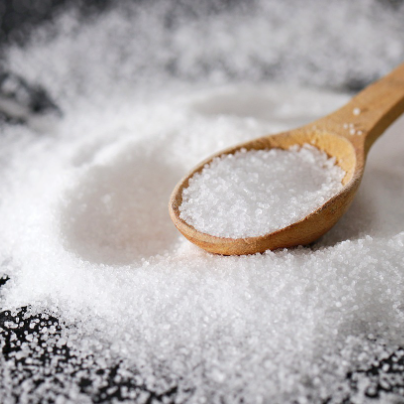

辻虎之助、塩と違法薬物を間違え逮捕
日本の有名なシェフである辻虎之助氏が、塩と違法薬物を誤って混同し、逮捕されるという混乱が起きました。事件は辻氏が所有していた調味料に関するものであり、警察が誤った鑑定を行ったことが判明しました。
辻虎之助氏は自身の店舗で使用するために、世界中から取り寄せた特殊な塩を所有していました。しかし、その塩が違法な薬物として鑑定され、辻氏は逮捕される事態となりました。
後になって、警察が行った鑑定が誤りであることが判明し、実際には危険な薬物ではなく普通の食品成分であることが分かりました。辻氏は誤った逮捕に対して法的措置を検討しており、事件は警察の鑑定ミスが引き起こしたものとして社会的な議論を呼んでいます。
この事件は食材や調味料に対する正確な鑑定の必要性を再確認させるものとなり、同時に鑑定の過程での逮捕などが検討されるべきかについても注目が集まっています。
日付: 2023年12月27日